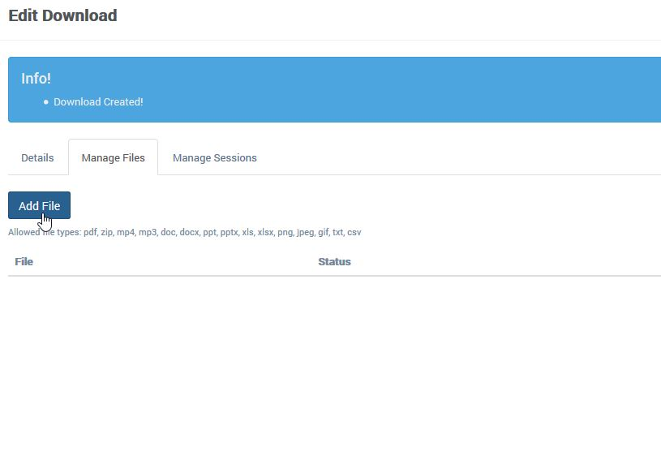
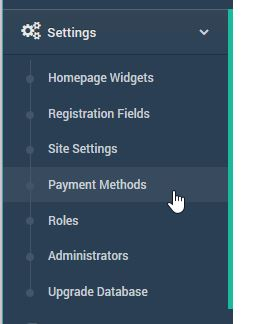
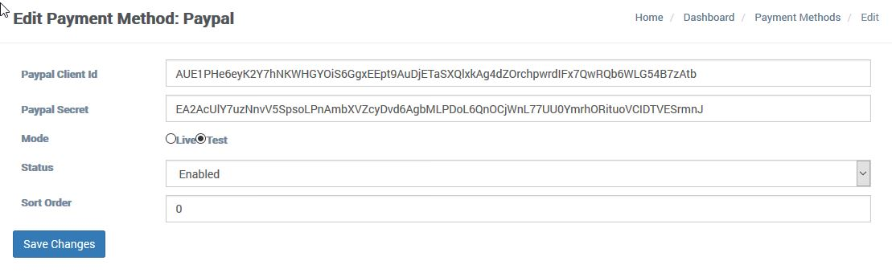
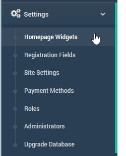
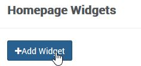
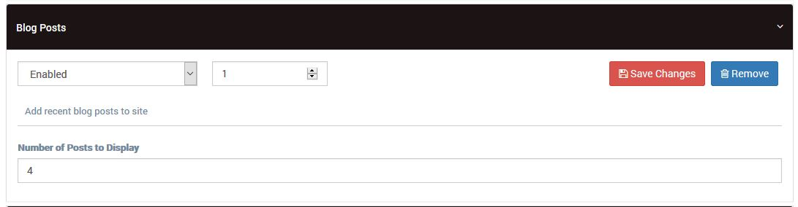

TrainEasy Documentation
Thank you for purchasing this application. If you have questions that are beyond the scope of this help file, contact us.
Before you begin installation, make sure you have a webserver that can run PHP and MySQL. The minimum php version supported is 5.4
-
The TrainEasy installation file consists of a zip file that as the following contents when unzipped

-
Upload the app.zip file into the root of your web server or wherever you would like the application to reside.
-
Extract the contents of the app.zip folder. You will see the following directory structure:

- We recommend that you point your domain name to the public directory. Your should be able to do this from your hosting's control panel.
Otherwise, you can use the .htaccess file located the the 'Resources' directory. Simply upload this file to the same directory as the public folder and then change the [YOUR_DOMAIN_NAME] placeholder to your actual domain name
- Open your web browser and enter the domain name for the application. You should see the setup wizard open like below:

-
Enter in your database credentials. Please ensure that the database already exists and
that it is empty. TrainEasy will delete any database table it finds that has the same
name as any of its tables.
Once you complete the setup wizard, you will reach a page that will give you links to
access both the frontend and the backend of your TrainEasy site. You will also receive
an email with your admin account login credentials.
 - Microsoft Word.jpg)
The Frontend
The Frontend is the public section of the TrainEasy application. This is where your students and other visitors will visit. You can access this area
simply by entering your domain name in the browser
The Backend
The backend is the restricted section of TrainEasy that is only accessible to administrators. You can access this section by adding /admin
to your domain name.
TrainEasy comes with a lot of configuration options that enable you setup the application to suit your needs. To access the configuration page, login to the
backend and go to 'Settings'-'Site Settings'

The configuration page is as shown below:

The following section explains the various configuration options
- General Tab
- Country/Currency: This controls the currency that is used for your website. Session fees will be formated based on this setting
and payment gateways will also be configured based on this
- Site Name: The site name should be the name of your organization. When the systems sends out email,it will use this as the sender name
- Homepage Title: This is the text that will appear at the top of the browser for the homepage. It is very important for search engine optimization
- Homepage Meta Description: This text is used by search engines and othe robots to get a description about your website. It is important you set this for search engine optimization purposes
- Admin Email: This is the email address that the system will use as the 'from' email when sending out notifications and alerts to students and administrators
- Enable Automatic Enrollment: If this is set to Yes, then the system will attempt to automatically enroll a student to the next upcoming session without them having to click on the 'Enroll' button. If the session requires payment, they will be forwarded to the payment page. This setting is usually used when you only have one session coming up.
- Use SSL: Set this to Yes if you have SSL installed on your server. This enables the app to use https:// for all pages
- Header Scripts (advanced): This can be used to add code (css or javascript) to the HEAD section of all pages of your site (Frontend only).
- Footer Scripts (advanced): This can be used to add code before the closing BODY tag of all pages of the Frontend
- Disqus Shortname: This is used to enable commenting on the Frontend. Visit disqus.com and get your shortname. Once you save it here, commenting will be enabled on the blog and revision notes sections of the Frontend
- Discussion Instructions: This controls the instructions students see when they try to post a question using the discussion feature.
- Show Session Fees: This can be used to hide or show the Fee column on the session enrollment page of the Frontend
- Site IP Address: Here you can specify the IP address of your server. If this is done, it will add extra secuirity to your cron jobs i.e. the automatic reminder emails sent to students and instructors. It ensures that the cron job can only be triggered by your server
- Send Class Reminders: This controls if the system should send reminders to students and instructors about upcoming classes. Please note however that you still need to setup the cron job for this to work. See the 'Setting Up Reminders' section for more information
- Reminder Day: This specifies how many days to a class should reminders be sent. The system will send out reminders once a day every day before the day the class is scheduled to hold.
- Site Timezone: This sets the timezone used by the entire site and the reminder system.
- Reminder Hour: This specifies the hour of the day when class reminders will be sent out.
- Logo and Icon Tab: Upload your website's logo and Favicon here.
- Menu Tab: Use this to hide or show various elements of the menu and header on the frontend
- Colors Tab: This tab allows you to set the colors of various aspects of Frontend.
- Social Links Tab: Set your social media accounts here.
- Labels Tab: This section allows you to change the default text that is used in the general layout of the Frontend.
- Footer Tab: Use this section to customize the elements of the Footer of the frontend
- Registration Tab:
- Enable registration?: Enables or disables the student registration form on the frontend
- Registration Instructions: Sets the text displayedat the top of the student registration form on the Frontend
- Successful Registration Email: Controls the text that is sent to a student after they register successfully.
- Send alert for enrollments: This setting enables the adminstrators to get a notification email when a studetn successfully enrolls for a session. For paid sessions, the alert will only be sent after successfull payment.
- Send alert for registrations: This setting enables the administrators to get notified whenever a student fills the registration form successfully.
- Mail Tab: This setting allows you to use an smtp server if you have one. Otherwise, you can use the default which is PHP's native mail function.
In TrainEasy, Sessions and classes work together. A session represents a training period. It is also a way to group classes.
Sessions are what students can enroll for and optionally pay for.
Classes are the various courses that occur during a session. TrainEasy allows you to create multiple classes. It is advisable to create your classes
first before you start creating Sessions. This is because a Session needs to contain at
least one class before it can be created.
Managing Classes
To create your first class, click on the ‘Classes’ menu option. Next, click on the ‘Add
Class’submenu

On the ‘Add Class’ page, fill in the details of the class

Each class will have a page of its’s own on the frontend. Classes can also be featured
on the Homepage. So it is advisable to fill in good descriptive information about your
classes. The following fields are available
- Class name: a short description about the class.
- Description: the full explanation about the class in rich text format.
- Sort Order (optional): the position of the class relative to other classes. This controls which class appears first on the list (on the frontend) in ascending order i.e. class 1 will be at the top.
- Cover Image (optional): a descriptive image of the class.
To manage existing classes, click on the ‘All Classes’ option.

On the classes page, click on the pencil icon for a class to edit it

Managing Sessions
To create a new
session, click on the ‘Sessions’ menu option then click on ’Creat Session’

The session creation page will open as shown below:
 The following fields are available for each session
The following fields are available for each session
- Session Name: A short descriptive name of the session
- Session Start Date: The date the first class in the session is scheduled to begin.
- Registration Closes: The closing date for students to be able to enroll for the
session. The session can still be visible on the frontend after this date but the
‘Enroll’ button will be unavailable.
- Session End Date: The date the last class in the session is scheduled to hold.
The session will no longer be visible on the frontend after this date.
- Payment Required: This specifies if a session is free or requires payment.
- Session Fee: The fee charged for the session. This field only takes effect if the
‘Payment Required’ field is set to ‘Yes’.
- Session Description: A summary about the session and its classes.
- Student Enrollment: This enables you to open or close enrollment for the session
at any time.
- Venue: The location for the classes in the session. If classes will hold in multiple
locations, you can specify the venue for each individual class.
- Select Classes: Select all the classes for the session. You can also specify the
date and venue for the class if (different from the session venue).
Managing Sessions
To manage existing sessions, click on the ‘Sessions’ menu option

This will lead to the page displaying all the created sessions.

On this page there are various tools available for managing the session and the
Students enrolled for it.
The ‘Total Attended’ column displays the total number of students that have attended
classes within the session. You can quickly view these students by clicking on the
number as shown below:

This will bring up a modal box as shown below:

The ‘Total Enrolled’ column displays the total number of Students that enrolled for the
Session. You can quickly view these students by clicking on the number as shown
below:

You will also notice an ‘Export’ button in the ‘Total Enrolled’ column. Clicking this button
reveals the following options:

The options are described below
- Export Students: This will generate a csv file containing all the students that have
enrolled for the session.
- Export Students (Attendance Import): This will generate a csv file that will enable
you to set the attendance records for students offline and then import back later.
This will be discussed later.
- Attendance Sheet: This will open a web page that you can print. It contains the
students’ mandatory details and a start and end column for each class. The
attendance sheet is intended for Students to sign when they arrive at a class.

- Telephone Numbers: This will generate a csv file containing just the telephone
numbers of students enrolled in the session. You can use this to easily send bulk
sms to students.
In the ‘Actions’ column of the sessions page, there are four available options. The pencil and trash icons are used to edit or delete a session respectively.
 - Microsoft Word.jpg)
Of special interest are the other two options. They are described below:
-
View Enrolled Students
 - Microsoft Word.jpg)
This option will open a page that lists all the students enrolled in the session. Unlike the previous option that displayed students in a popup modal box, this page give you options to modify the student.
 - Microsoft Word.jpg
)
-
Send Mail to Enrolled Students:
 - Microsoft Word.jpg) This option enables you to send a message to all students enrolled in the session. Clicking it will open the following page:
This option enables you to send a message to all students enrolled in the session. Clicking it will open the following page:
Viewing
Payments
The
‘Payments’ menu option under sessions enables you to easily view all payments
that have been made by students and the payment method used.
Viewing
Payments
The
‘Payments’ menu option under sessions enables you to easily view all payments
that have been made by students and the payment method used.
Transactions
Some payment methods (such as bank transfer) generate
transactions for each payment attempt by a student. You can view the status of
a transaction and approve it on this page.
The transaction feature is very important when processing
payments made offline. If a student selects the ‘Bank Deposit/Transfer’ payment method. They can
simply let you know their transaction id (which will be displayed to them) and
then you can approve the transaction on this page after payment has been
confirmed. The student will then be
automatically enrolled for the selected session.
To manage students, click on the ’Students’ menu option.
This will reveal the following options
1. Add
Student: Use this to easily add a new student. The student will be
automatically emailed their login details.
2. View
Students: On this page, you can view all the students registered or created.
You can easily edit, view or delete a student. You can also enroll a student to
a session on this page. Click on the + button to do this
3. Bulk
Enroll: On this page, you can easily enroll multiple students to a session by
uploading a csv file. A sample csv file is available for download. Simply
download this file and fill in the details for each student. Each student is
uniquely identified by their email address. If a student does not exist, a new
record will be created for them using the details specified, thereafter they
are enrolled for the session. If a student already exists, they are simply
enrolled for the session.
The attendance module enables you to set the attendance
for each student per session and class. There are three attendance setting
options available:
1. Attendance
– Lets you set the attendance by selecting students individually.
2. Attendance
(bulk) – Lets you set attendance of all enrolled students by ticking checkboxes
3. Attendance
(import) – Lets you set attendance by importing a csv file.
Let’s go over each method
Attendance
This option enables you set attendance by typing in a
student’s name.
Once
you type in a name, click on it to move it to the box on the right.
Add
as many students as you want this way. Next select the session and the class.
Finally click submit to save the attendance.
Attendance
(Bulk)
This feature enables you to set the attendance by
selecting the relevant students from a list. Once you select a Session from the
dropdown, the list of enrolled students will appear
In the ‘Mark’ column, simply select the students that you
want to set attendance for and then click ‘Save’.
Attendance
(Import)
This feature enables you to set the attendance offline
and import later.
The instructions on how to use this feature are available
on the page.
Certificate
List
This
feature enables you to download a list of students that attended a certain
number of classes in a session. You can generate two types of lists:
- Specific
classes: This lets you select the mandatory classes for a session
- Minimum number
of classes: This enables you specify a minimum number of classes each
student must have attended.
The search option enables you check for attendance
records from either the selected session or any other session. For example, a
student might have completed the classes you specify by attending two different
sessions. This option enables you add or exclude them from the list.
A csv file will be generated showing the classes students
attended as well as the attendance dates.
Attendance
Dates
This feature enables you to easily set the attendance
date for all the students in a session. By default, the date is set based on
the class date you specified during the session creation. This feature enables
you to override that.
To use this feature, simply select a session from a
dropdown and then pick a date
TrainEasy comes with a powerful computer based testing
(cbt) feature. With this feature, you can create tests/exams/quizzes for your
students to take on the frontend. You
can then generate a list of students that passed the test based on a passmark
you set.
To create a new test, click on the ‘Tests’ menu option.
Next, click on ‘Add Test’

On the ‘Add Test’ page, you will see the following
fields/options
1. Test
Name: A short descriptive name of the test
2. Instructions:
Type in any instructions you would like students to read before taking the
test.
3. Status:
This controls if the test becomes visible on the frontend or not.
4. Pass
Mark: Set this as a percentage i.e. 0-100. It sets the minimum score a student
must make in order to pass the test.
5. Time
Allowed: This enables you to set a time limit for a test.
6. Allow
Multiple Attempts: This controls if a student can take the test multiple times.
7. Session:
You can optionally restrict a test to students enrolled in a session by setting
this option.
After you add a test, you will be automatically
redirected to a page where you can add new questions and options to your test
Clicking on the ‘Add Question’ button will bring up a pop
up that will enable you to easily add a question
Managing
Tests
To modify or manage your existing tests, simply click on
the ‘All Tests’ menu option
On the ‘All Tests’ page, take note of the following
options
1. The
Attempts button: Click on this button to view all the results of tests that
students have taken.
Clicking this button will open a new page displaying all the results.
2. Managing
Questions: On the Tests page, you can manage the questions for a test by
clicking on the ‘Manage Questions’ icon.
On the page that opens, you will be able to add new questions or modify
existing questions.
3. Duplicate
a Test: Sometimes you would like to create a new test based on a previous test.
The duplicate option gives you the ability to create an exact copy of an
existing test without having to type questions and options all over again
4. Edit
and Delete: Pencil and Trash icons are used to edit or delete a test.
Revision notes are intended to be pre or post class
summaries. Each revision note is associated with a session and a class. Only
students that are enrolled in a session can view the revision notes associated
with it.
To create a new revision note, click on the ‘Add Note’
option under ‘Revision Notes’.
The add note page has the following fields:
1. Title:
The note title
2. Session:
The note session
3. Class:
The note class
4. Description:
An optional description. The Description will be part of the notification email
a student will receive when the note is saved.
5. Content:
The content of the revision note.
6. Notify
session students: If this is selected, each student enrolled in the session
will receive an email informing them about the availability of the revision
note.
The articles feature is a simple content management
system that enables you to easily manage information pages on your site e.g.
About us. Vision, Mission etc.
To create a new article, click on the ‘Add Article’ menu
option under ‘Articles’

The ‘Add Article’ page has the following options:
1. Heading:
This is the main page title.
2. Content:
This is the main content of the page.
3. Show
on top navigation: This controls if the link to the article will be displayed
on the top navigation bar on the frontend.
4. Show
on bottom navigation: This controls if the link to the article will be
displayed on the footer of the frontend.
5. Sort
order: The position of the article relative to other articles in ascending
order.
6. Parent:
Set this option if you would like the article to appear beneath another
article.
7. Url
slug: This determines the url path to the article e.g. http://yorudomain.com/about-us . This is automatically
generated but you can set it yourself if you wish.
Viewing
Articles
You can easily view and edit existing articles by
clicking on the ‘View Articles’ menu option.
The Downloads feature on TrainEasy enables admins and instructors easily share files with students.
This feature also enables you to restrict certain files to students that
are enrolled in sessions you sepecify. If no sessions are specified for a download, it will be available for
any registered student to download.
The following file types are allowed: pdf, zip, mp4, mp3, doc, docx, ppt, pptx, xls, xlsx, png, jpeg, gif, txt, csv. Please note that security is not provided for image files
i.e. png, jpeg or gif files. Users might be able to access these files via a direct link. If you want to securely share these type of files, we recommend you put them in a zip archive.
To create a new download, login to the backend and click on the 'Downloads' menu option. Then click 'Create Download'
On the download creation page, fill in the name of the download as well as its description. Also set 'Enabled' to 'Yes' or 'No'. Disabled
downloads will not be available to students.
Next, click on the 'Save' button. After the download as been saved, you will be redirected to the download edit page. On this page, you can
add files to the download you just created as well as assign the downloads to sessions.
To add a new file to your download, click on the 'Manage Files' tab. Next, click on the 'Add File' button.

This will bring up the file manager. Here you can upload the file you want to add or select and existing file. Select the file you wish to add by double clicking on it.
To assign a session to the download, click on the 'Manage Sessions' tab. Next, click on the 'Add Sessions' button.
This will bring up a popup for selecting your session.
Select sessions you wish to add and then click on the 'Add Sessions' button.
The discussions feature is a way for students to
confidentially interact with the administrators/teachers of. A student is able
to post a question on the frontend and each administrator gets notified
immediately via email.
To view current discussions, click on the ‘Discussions’
menu option.
This will lead to a page that shows all the available
discussions.
Clicking on the ‘View’ button leads to the discussion page
where you can post a reply as well as view the past replies to the discussion.
TrainEasy ships with multiple payment methods for
receiving payment for session enrollment. The following gateways are available
1. Paypal
2. 2checkout
3. Stripe
4. Bank
deposit/transfer
5. Paystack
Each payment method will automatically use the currency
you configured for your site. So make sure the method supports your currency
before enabling it.
To configure a method, click on the ‘Payment Methods’
menu option

The list of available methods will be displayed:

Click on the ‘Edit’ button for a method to configure it.

Fill in the relevant credentials/details and save.
Note that you will need to get the credentials from the
respective gateway website.
TrainEasy makes it very easy to add different types of
content to your homepage. This is done via ‘Homepage Widgets’ . The following
types of widgets are available:
1. Slideshow
2. Text
& Button
3. Featured
Classes
4. Session
Calendar
5. Plain
Text
6. Blog
Posts.
Note that you can add multiple widgets of the same or
different type to your homepage.
To add a new widget, click on the ‘Homepage Widgets’
option

On the Homepage Widgets page, click on the ‘Add Widget’
button.

This will bring up a popup that will enable you specify
the type of widget you are ttrying to create.
Once you click on the ‘Create’ button. You will be able
to configure the available options depending on the widget type

MANAGING
ROLES
TrainEasy comes with a powerful role management system
that enables you to set permissions for every aspect of the backend.
A role is simply a collection of permissions that
specifies what administrators can or cannot do on the backend. By default, two
roles are provided after installation
1. Administrator
2. Super
Administrator
To create a new role, click on the ‘Roles’ menu option
Next click on the ‘Add Role’ button
Enter in the role name and select all the permissions you
would like that role to have
MANAGING
ADMINISTRATORS
You can create as many administrators as you wish. Each
administrator is assigned a role that limits what they can do on the backend.
To add a new administrator, click on the ‘Administrators’ menu option
Next, click on the ‘Add Administrator’ button.
On the ‘Add Administrator page, fill in all the details
for the administrator
Setting Up Class Reminders
TrainEasy allows to you setup automatic reminder emails that will be sent to Students and Instructors days before a class is scheduled to hold. TrainEasy also allows you to specify what time of the day the mails should go out and how many days before the class the reminders should begin.
To Configure reminders, please follow these steps
- Setup the CronJob: For the reminder feature to work, you need to setup a cron job on your server or external cron service. A cron job is a feature most hosting companies provide that enables you to trigger certain actions on your website at specified times.
In this example, we will demonstrate how to setup the cron on a cpanel/linux hosting account.
- Login to your cpanel hosting. On the dashboard, click on 'Cron Jobs'

- On the 'Add New Cron Job' page, under common settings, select 'Once Per Hour(0 * * * *)'. This will automatically fill up the other fields except the 'Command Field'

-
In the 'Command' field, enter the following command: curl http://[YOURDOMAIN]/cron
Replace [YOURDOMAIN] with your actual domain name
- Click on 'Add New Cron Job' to save
- Set Your Reminder Settings: To conifgure when reminders will be sent out, go to 'Settings'-'Site Settings'. In the general tab, scroll down to the 'Send Class Reminders' option. Make sure it is set to 'Yes'. Set the reminder day to how many days before a class you want the system to start sending reminders (once a day). For example if a class is to hold on Saturday and you set the reminder day to 2, the enrolled students and intructors will recieve reminders on Thursday and Friday. The Reminder Hour feature sets the hour of the day that reminders will go out e.g. if set to 12, reminders will go out at 12 noon.

Managing Certificates
TrainEasy comes with a powerful certificate generation feature that enables you totally eliminate the need for creating paper certificates for each Student at the conclusion of
your training programs. This feature can also be used to generate other documents such as admission letters.
The Certificate feature enables you to design documents with a drag and drop interface. You simply upload a blank copy of your existing or new certificates and then specify where the various text should go (e.g Student Name, Session Name, Completion Date etc.)
Each certificate must be associated with a session. Also, certain conditions can be assigned to a certificate which the student must fulfill in order to be granted access to the document.
The following conditions are available:
- Classes: You can specify which classes the Student must have attended before they can download the certificate.
- Tests: You can specify which tests a student must have completed successfull before they can download the certificate
To create a new certificate follow these steps
- Login to the backend and click on the 'Certificates'->'Create Certificate' option
- Fill in the available options. Please note that the 'Certificate Image' should be a blank copy of your certificate (preferably in A4 size). Here is a sample:
- Once you click the 'Save' button, you will be redirected to the certificate edit page. On this page, you can drag and drop the various 'placeholders' that are available. These placeholders let you specify where text like the stundent's name, session name etc will be placed on the downloaded certificate.
- You can specify the mandatory classes and tests by clicking the relavant tabs.
- Do note that, on the 'Mandatory Classes' tab, there is an option a the bottom called 'Search all sessions for attendance' if you select this option, the system will search all existing sessions for attendance of the classes you select in this tab. This is usefull if a student attends some classes in one session but attends the remaining in another session.
Upgrade Guide
To upgrade your version of TrainEasy to an updated version, please follow these instructions:
- Backup your old application. Please backup all files and your database.
- Extract app contents. Extract the contents of your app.zip file into a new directory on your server.
- Copy relevant files. Copy the following files and folders from your old application to the same location on your new application.
- config/autoload/local.php (file)
- public/usermedia (folder)
- .htaccess (if present in the root directory, file)
- Point Domain. Point your domain name to the new directory
- Update your database. Login to the TrainEasy backend and go to 'Settings'->'Upgrade Database'. Click on the 'Upgrade Database' button.
Alternatively, if you have challenges pointing your domain to the new directory, you can simply move the old files from their current location and move the new files in their place.